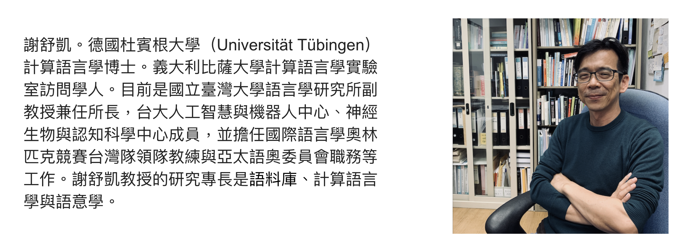
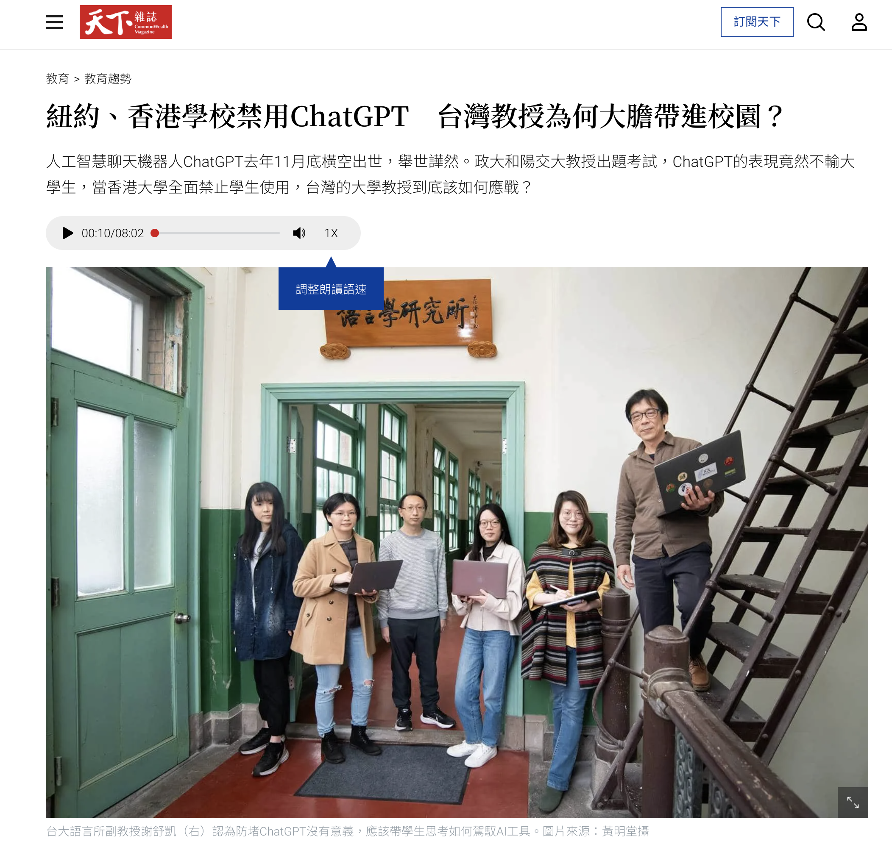
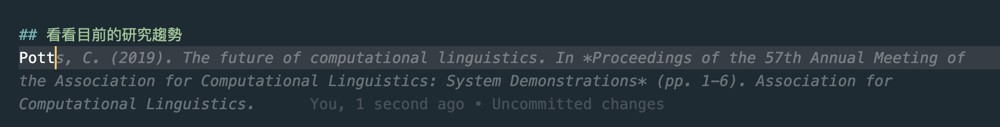
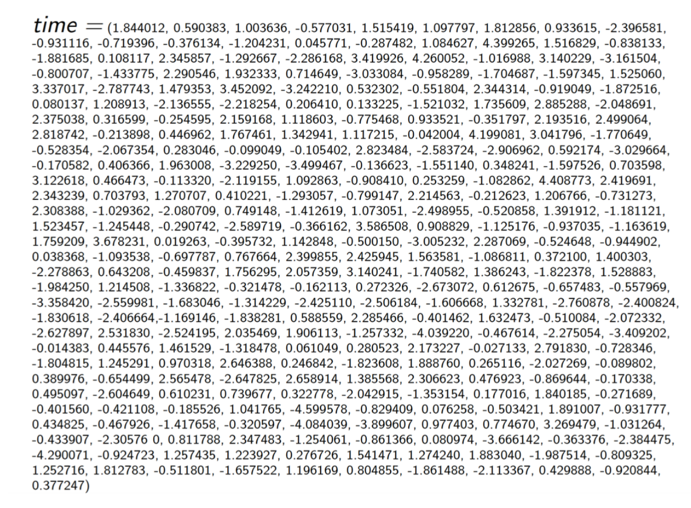

Week1 Orientation
歡迎加入語言與資訊的世界

計算語言學與語言學理論
計算語言學
語言學理論
它們之間的關係
- CL4LT
- LT4CL
- CLwithLT
計算語言學是英文的直譯。在歐洲傳統上叫做語言資訊學 (linguistique informatique)，或電腦語言學 (Computerlinguistik)，可能更爲傳神。
計算語言學和自然語言處理
- 是一門語言學的子領域。利用電腦當成研究輔助工具，探究語言的結構、演化、變異、學習等問題。
目的是 AI 導向，讓機器能夠理解人類的語言，並且能夠透過語言來與人類溝通。
- 自然語言處理 | Natural Language Processing
- 自然語言理解 | Natural Language Understanding
- 自然語言生成 | Natural Language Generation
自然語言處理
研究慣例上，將語言資訊的問題切分成不同的子任務，成熟之後就變成大家較熟悉的應用。
- 語音辨識與語音合成
- 文本摘要
- 機器翻譯
- 自動問答
- 。。。。
曾經語音與多模態(multimodality)是比較不歸類在 NLP 的領域，但最近幾年的進展與趨勢，也與 NLP 的研究社群密切互動。
計算語言學
漢語的雙音節化是怎麼演化的 （computational historical linguistics）
新詞 (neologism)、新構式 (constructions) 是怎麼在社群中突現、傳遞、消亡的 （computational sociolinguistics）
面對完全沒有接觸過的語言，如何理解與編寫語法系統？（computational linguistic typology/ xenolinguistics）
……. (你的想法？)
從語言的處理到理解
From Natural Language Processing to National Language Understanding
- 對於處理與理解，都是操作型定義 (operationalized)。
傳統自然語言處理的發展

(個人觀點)
(形式)語言學與傳統自然語言處理中的 Modularity 預設， 是好用的虛構 (useful fiction, Haugen and Dil, 1972)，方便整理知識，但非真實的語言現象。
語言：人類，爲了溝通目的，在時空脈絡下，發展出的形意符號系統。 (cultural Species; form-meaning pairing; symbolic; self-adaptive complex system; situated and embodied cognition; etc.)
符碼本質是形意映射，而指涉意義是約定俗成、很吃情境的。因此符碼運算與表徵是給人看的。語言的理解，涉及到更複雜的連續的過程，而非一個分段、分解的過程。
語言學不等於 rule-based。
大型預訓練語言模型
pre-trained Large Language Models (pre-LLMs)
- 改變了(目前)的自然語言處理研究方向
GPT-3 and Beyond
很清楚的科普介紹
post-AI NLP: in-context learning (prompt-training)
a new paradigm of NLP that is based on the recent advances in AI, especially in the field of language modeling.
Recently, we have seen dramatic advances in natural language processing (NLP) driven by huge pre-trained language models such as GPT-3 and DALLE-2. Instead of building many small task-specific models, there is a movement to create and use these more all-purpose huge language models for many NLP applications.
The most intriguing finding is that these models employ a new learning paradigm: in-context learning, where they learn to do a downstream task simply by conditioning on a prompt consisting of a few input-output examples without any parameter updates
如何影響教學
(順便介紹助教群 😄)

爲什麼我們可以放心（或應該擔心）？
aka. 無中生有，跟真的一樣

這門課的學習方向與態度
AI-aside, treated as IA (intelligent assistant) with sophisticated prompt-training; (不要被它是否是 GAI 的問題糾結，還不是！)
不要囿限於自己的領域觀點（工程或人文），或自己的生命形態（碳基）。
在研究中，我們會遇到很多不同的觀點，甚至是不同的領域。我們要學會如何去理解不同的觀點，並且能夠在不同的領域中自如地移動。(AI, 2023)

我們理解「時間」的方式不同，彼此尊重。
我們怎麼實作這門課？
我們的主要學習重點不會放在自然語言處理中的機器學習模型原理 (請大家在其他的課程中並行學習)，而是放在語言學理論與自然語言處理的關係。
選擇有語言學背景的教材 (如 Jurafsky & Martin SLP3, Christopher Potts cs224u, etc.) 來進行課程的教學，並補充不同的觀點。
這是沒有教科書的學門
- 實作部分側重應用。